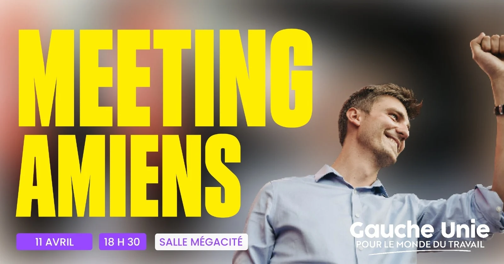
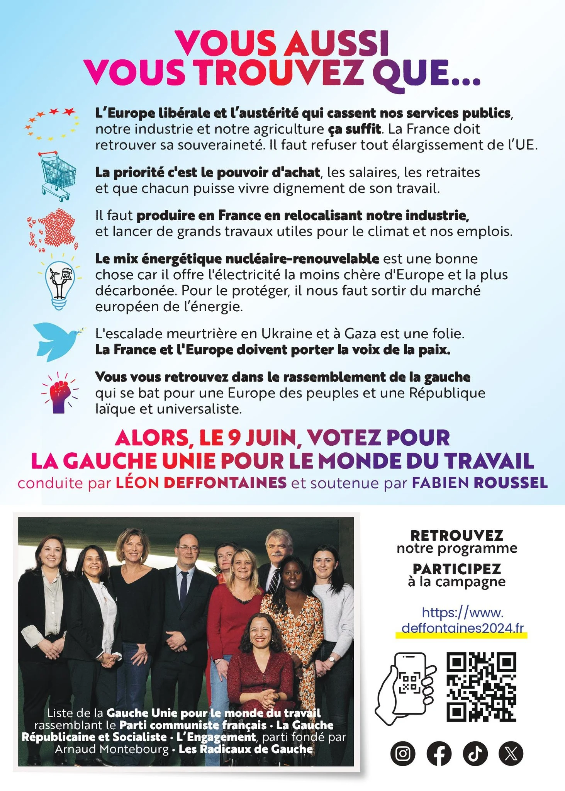

Annonce archivée
Européennes 2024. Le meeting de la Gauche unie à Amiens
Date indiquée par Facebook · 11 avril 2024
Repères éditoriaux
Le visuel annonce un meeting avec Léon Deffontaines à Amiens, le 11 avril à 18 h 30 à Mégacité.
Texte conservé avec la publication
ÉLECTIONS EUROPÉENNES LE 9 JUIN 2024
#europeennes2024
#GaucheUnie
https://www.deffontaines2024.fr/
1er meeting de campagne Léon Deffontaines


Sources
Archive rouge · export Facebook · AR-0002-FB-01426
À lire aussi · Européennes 2024. Le meeting de la Gauche unie à Amiens · Le lien d’origine